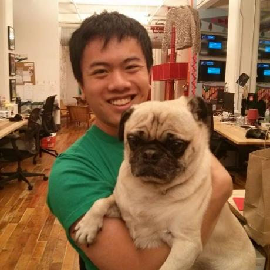
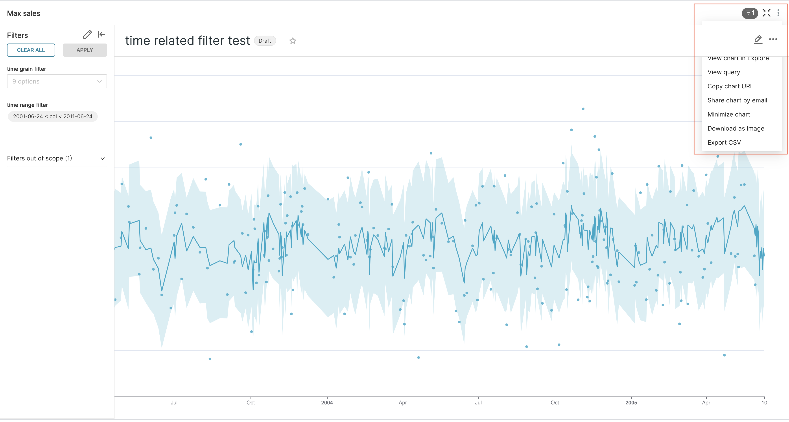

#
Flask

Flask is a web framework for Python, based on the Werkzeug toolkit.
Here are 25,120 public repositories matching this topic...
MattiasOlla
commented
on 10 Sep 2020
In recent versions (can't say from exactly when), there seems to be an off-by-one error in dcc.DatePickerRange. I set max_date_allowed = datetime.today().date(), but in the calendar, yesterday is the maximum date allowed. I see it in my apps, and it is also present in the first example on the DatePickerRange documentation page.
E
Serverless Python
python
flask
lambda
django
aws-lambda
serverless
api-gateway
serverless-framework
pyramid
zappa
bottle
-
Updated
10 days ago - Python
A curated list of awesome Flask resources and plugins
-
Updated
on 11 May
jofpin
commented
on 22 Jan 2020
It has been a pleasure for me to contribute to all of you 2 versions of this tool.
I've been working on other open source projects that I'm about to release for you, so I haven't finished trape version 3.0.
But, I invite you and the entire community that has used this project, to collaborate with some lines of code, implementing your own ideas and improving trape, turning it into a project o
23
Socket.IO integration for Flask applications.
-
Updated
4 days ago - Python
Nginx UI allows you to access and modify the nginx configurations files without cli.
-
Updated
on 20 Mar - Python
A flask template with Bootstrap 4, asset bundling+minification with webpack, starter templates, and registration/authentication. For use with cookiecutter.
-
Updated
3 hours ago - Python
butla
commented
on 5 Feb 2020
Hey! When I was reading the docs and I saw api.background.task, the first thing that popped into my head was "but you can just use asyncio.create_task or loop,.run_in_executor for that without inventing something new!". But then I noticed that it also passes the context vars to the synchronous backround stuff, which is nice. Wonder why that's not the case in the stdlib, cause it would be nic
Open
Test coverage 100%
2
Open
SentryMiddleware
jessesheidlower
commented
on 17 Nov 2017
I'm new to Flask, and was wondering about a feature that I think would be useful to add to the Pagination class. Unless I'm missing it, there doesn't seem to be a built-in way to get the numbers of the items you're viewing on the page itself. That is, if you want to display "387 records found; displaying 26–50", you'd have to do calculations to get the "26" and "50".
I think something along the

ColdHeat
commented
on 30 Mar 2019
This will help reduce some copy pasted boiler plate code.
Simple and rapid application development framework, built on top of Flask. includes detailed security, auto CRUD generation for your models, google charts and much more. Demo (login with guest/welcome) - http://flaskappbuilder.pythonanywhere.com/
-
Updated
9 days ago - Python
-
Updated
8 days ago - Python
Python爬虫/Flask网站/免费ShadowSocks账号/ssr订阅/json 订阅
-
Updated
on 4 Jun - Python
In this repository, I will share some useful notes and references about deploying deep learning-based models in production.
react
python
angularjs
flask
c-plus-plus
tutorial
deep-neural-networks
deep-learning
mxnet
rest-api
production
keras
pytorch
tensorflow-models
tesnorflow
model-serving
caffe2
serving
serving-pytorch-models
convert-pytorch-models
-
Updated
on 20 Jun
Bittorrent software for cats
-
Updated
21 days ago - Python
Easy OpenAPI specs and Swagger UI for your Flask API
api
flask
rest-api
restful
swagger
api-documentation
openapi
marshmallow
swagger-ui
flask-extensions
openapi-specification
flask-extension
flask-restful
api-framework
-
Updated
2 hours ago - Python
The ultimate Python library in building OAuth, OpenID Connect clients and servers. JWS,JWE,JWK,JWA,JWT included.
-
Updated
18 days ago - Python
A simple Flask boilerplate app with SQLAlchemy, Redis, User Authentication, and more.
-
Updated
15 days ago - Python
gghez
commented
on 7 Feb 2019
ujson is no more actively maintained and specially for some critical bugs not present in json package.
one example forcing us to revert ujson usage:
ultrajson/ultrajson#325 (2 days ago, mine)
ultrajson/ultrajson#301 (same but 1 year ago and no answer)
Created by Armin Ronacher
Released April 1, 2010
Latest release 2 months ago
- Repository
- pallets/flask
- Website
- flask.pocoo.org
- Wikipedia
- Wikipedia
Screenshot

Description
chart 3 dot menu is behind the chart title panel in chart maximize mode